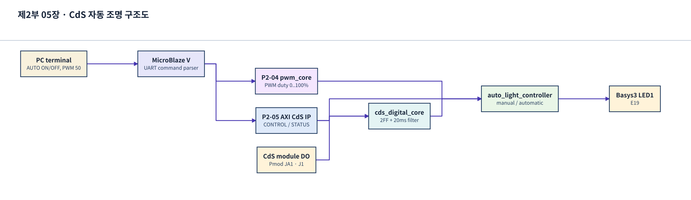
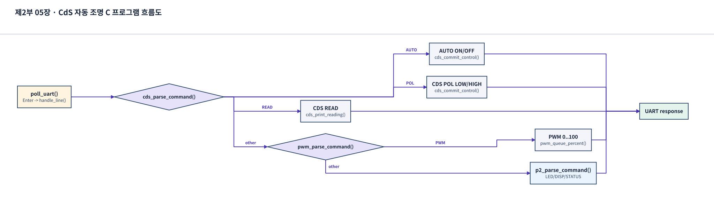

00이 장의 목표
Basys3 Pmod JA1의 센서 DO를 FPGA RTL에서 동기화·안정화하고, UART 문자열 명령과 AXI 설정으로 04장 LED1 PWM을 자동 제어한다.
- AUTO ON/OFF
- CDS READ / POL
- JA1 J1 · 3.3V
- Vivado/Vitis 2024.2
01완성 후 동작
CdS(씨디에스, 황화카드뮴) 디지털 조도센서 모듈의 DO 출력으로 LED1 PWM 밝기의 자동 허용·차단을 제어한다. 센서의 임계값 판단은 외부 비교기 모듈에서, 안정화와 자동 제어는 FPGA RTL에서 처리한다.
| UART 명령 | 기대 동작 | 유지할 기능 |
|---|---|---|
PWM 50 | LED1 PWM 듀티 설정 50% (04장 기능) | 05장 AUTO가 ON이면 어두움에 한해 출력 |
AUTO ON | 필터링된 CdS 어두움 상태로 LED1 출력 게이트 | PWM 설정은 변경하지 않음 |
AUTO OFF | 센서 무시, 기존 PWM 출력 통과 | 04장 동작과 동일 |
CDS READ | RAW/DARK/VALID/GATE/AUTO/POL 실측 상태 UART 출력 | 등록된 센서 입력 상태 확인 |
CDS POL LOW | 디지털 DO=0을 어두움으로 해석 | 안정화 필터 재적용 |
CDS POL HIGH | 디지털 DO=1을 어두움으로 해석 | 안정화 필터 재적용 |
STATUS | 01~04장 정보 + 05장 센서 상태 | 누적 상태 표시 |
LED ON/OFF, DISP 0050 | LED0 제어 및 FND 표시 | 01~03장 명령 보존 |
02MicroBlaze V · AXI · CdS · PWM · LED1

MicroBlaze V는 명령 문자열을 해석하고 AXI4-Lite(에이엑스아이 포 라이트, 메모리 매핑 주변장치 버스)로 모드·극성을 설정한다. cds_digital_core는 CPU 없이 2FF 동기화와 안정값 판정을 수행한다. auto_light_controller는 LED1 단일 출력 소유자다.
03CdS 디지털 센서와 JA1 배선
| 모듈 | Basys3 연결 | 사전 조건 |
|---|---|---|
VCC | 3.3 V 공급 | 실제 센서 모듈이 3.3 V에서 동작하는지 확인 |
GND | 공통 GND | 보드와 모듈 접지 연결 |
DO | JA1 (FPGA J1), cds_digital | DO HIGH가 FPGA 3.3V 허용 범위인지 확인 |
AO | 미연결 | 아날로그 출력은 08장 XADC 학습과 구분 |
0420ms 안정화 · 출력 극성 · 자동/수동 선택
CdS 자체의 저항은 빛에 따라 연속적으로 변하지만 이번 실습은 비교기 모듈의 디지털 DO만 사용합니다. 물리적 조도(lux) 측정이나 아날로그 ADC는 수행하지 않습니다. DO 입력은 두 단계 플립플롭을 거쳐 20 ms가량 같은 상태가 유지되면 어두움 상태가 갱신됩니다.
| AUTO | PWM 입력 | 센서 | LED1 기대 동작 |
|---|---|---|---|
| OFF | 50% | 밝음 또는 어두움 | 50% PWM 지속 |
| ON | 50% | 어두움 · VALID=1 | 50% PWM 출력 |
| ON | 50% | 밝음 · VALID=1 | 소등 |
| ON | 50% | VALID=0 | 소등(센서 미확정) |
| ON | 0% | 어두움 · VALID=1 | 소등(PWM 0 유지) |
AXI 클록 100 MHz가 확인된 경우, 필터 2,000,000클록은 약 20 ms입니다. 실제 AXI 클록이 다르면 시간을 다시 계산하거나 매개변수를 조정합니다. 센서 비교기 임계값 조정과 디지털 필터 시간은 서로 다른 기능입니다.
05사용자 AXI CdS IP · 4개 레지스터
| 오프셋 | 이름 | 접근 | 비트·역할 |
|---|---|---|---|
0x00 | CONTROL | RW | bit0 AUTO_EN; bit1 DARK_WHEN_LOW (Reset 0b10) |
0x04 | STATUS | RO | bit0 RAW_SYNC, 1 DARK_FILTERED, 2 VALID, 3 GATE, 4 AUTO_EN, 5 DARK_WHEN_LOW |
0x08 | IP_ID | RO | 0x00050001 |
0x0C | FILTER_CYCLES | RO | 보드 기본 2,000,000 (100 MHz인 경우 ≈20ms) |
CONTROL만 쓰기 가능. 주소와 데이터의 AXI AW/W 핸드셰이크가 별개로 도착해도 처리하며 WSTRB를 반영합니다. 읽기 전용 레지스터 쓰기 또는 미정의 주소는 SLVERR입니다.
06LED 소유권 및 01~04장과의 통합
| 자원 | 05장 최종 출력 소유자 | 상태 |
|---|---|---|
led[0] | P2-01 AXI LED IP | LED ON/OFF 유지 |
led[1] | auto_light_controller (PWM × CdS 모드) | AUTO OFF에서 04장 PWM 그대로 통과 |
led[15:2] | 기존 AXI GPIO | LED14/15 GPIO 배선만 유지 · 소프트웨어 표시는 09장부터 구현 |
seg/an/dp | P2-02 FND 사용자 IP | 선행 0 · 자리별 숫자 의미 보존 |
btnU/D/L/R | P2-03 이벤트 IP | 5초 Short/Long · IRQ 유지 |
btnC | 시스템 Reset | 이벤트 버튼으로 사용 금지 |
cds_digital | 신규 JA1 입력 | 3.3V LVCMOS33, JA1 디지털 입력 |
Top은 보드 입출력 선언, wire, Controller·Wrapper 인스턴스 및 단순 비트 연결만 수행합니다. 정책 판단은 auto_light_controller.v에 둡니다.
07UART 문자열 처리 플로우차트

poll_uart()가 Enter를 수신한 뒤 handle_line()을 호출합니다. cds_parse_command()에서 05장 명령을 먼저 검사하고, 그렇지 않은 경우 기존 pwm_parse_command() → p2_parse_command()로 전달합니다. 센서 상태는 CDS READ로, 누적 상태는 STATUS로 확인합니다.
0804장 기반 새 프로젝트 복제
File → Project → Save As 에서 신규 폴더 soc_ip_design_05를 지정하고 soc_ip_design_05.xpr를 생성한다. 04장 실습을 완료한 뒤 프로젝트를 복제한다. 기존 파일을 이동·삭제하거나 프로젝트 내부 경로를 수동 치환하지 않는다.
신규 XPR 및 BD·Top 파일이 새 프로젝트 내부에 위치한다. 01~04장 XPR/소스는 수정되지 않아야 한다.
09기존 LED1 및 명령 동작 기준선 확인
Sources에서 사용자 Top basys3_soc11_top과 soc11_integration.bd를 연다. 04장 pwm_led1이 최종 led[1]으로 가는 배선을 기록하고, LED0/FND/버튼/LED14·15의 기존 포트를 적어 둔다.
현재 LED1은 PWM 전용, LED0은 01장 IP, LED2~15는 기존 GPIO임을 확인한다. FND와 버튼 포트도 실제 자동 생성 Wrapper의 선언과 비교한다.
핵심 이유: 05장은 LED1의 최종 출력 경로만 바꾸며, PWM Core 자체와 LED0·FND·IRQ 기능은 재설계하지 않는다.
10CdS 디지털 센서 및 모듈 전압 확인
CdS LDR + 비교기 모듈에서 VCC, GND, DO를 찾는다. AO(아날로그 출력)는 연결하지 않는다. 모듈 데이터시트에서 3.3 V 전원 동작과 DO의 HIGH 전압을 확인한 경우에만 DO → Basys3 JA1 (J1)을 연결한다. 전원은 허용된 3.3 V, GND는 공통 접지로 연결한다.
센서 DO가 0 V / 3.3 V 범위 안에 있음을 측정 또는 데이터시트로 확인한다. DO가 5 V인 모듈은 직접 연결하지 않는다.
핵심 이유: Basys3 JA1의 FPGA PACKAGE_PIN은 J1이고 IOSTANDARD는 LVCMOS33이다. Arduino 호환 모듈이라는 사실만으로 3.3 V 안전성을 보장할 수 없다.
11센서 출력 극성 실측 및 AUTO 모드 규격 확정
주변 밝기를 바꾸며 센서 모듈 DO가 밝을 때 0/1, 어두울 때 0/1인지 확인한다. CDS POL LOW는 DO LOW를 어두움으로, CDS POL HIGH는 DO HIGH를 어두움으로 해석한다. 둘 중 한 가지를 실측 결과에 따라 선택한다.
밝음/어두움에서 CDS READ의 RAW와 DARK 의미가 일치하고 필터 수렴 후 VALID=1이 된다.
핵심 이유: LM393 비교기 모듈이라도 판매형/회로별 출력 극성, 가변저항 임계값, 내부 풀업 전압이 다를 수 있다. 최초 예제의 LOW는 가정이며 확정값이 아니다.
12기능 분리: `cds_digital_core.v` 확인
cds_digital_core.v 전체 소스를 연다. 비동기 센서 DO는 sync_meta → sync_data 2FF를 거쳐 필터로 전달된다. FILTER_CYCLES=2000000은 실제 AXI 클록이 100 MHz일 때 약 20 ms를 의미한다. 극성 변경은 stable_valid를 무효화하고 다시 안정값을 판정한다.
Core가 보드 핀·Top·CPU 함수와 분리된 재사용 모듈이다. stable_dark, stable_valid, raw_sync만 출력한다.
핵심 이유: CPU의 주기적 폴링으로 20ms를 구현하지 않는다. 센서 데이터가 불안정할 때 새로운 값으로 즉시 전환하지 않는다.
13기능 분리: `auto_light_controller.v` 확인
auto_light_controller.v 전체 소스를 확인한다. AUTO=0이면 04장 PWM 신호를 그대로 통과시킨다. AUTO=1이면 stable_valid && stable_dark일 때만 설정된 PWM을 출력한다.
AUTO OFF + PWM 50은 밝기 50%를 유지한다. AUTO ON + PWM 50은 어두울 때 약 50%, 밝을 때 소등한다. PWM 0이면 AUTO ON에서도 소등한다.
핵심 이유: LED1 출력 우선순위를 사용자 Top의 연산자·조건식으로 구현하지 않고 독립 Controller 내부에서만 처리한다.
14AXI4-Lite 레지스터 맵 확인
신규 IP의 32-bit 레지스터 4개 오프셋 0x00, 0x04, 0x08, 0x0C를 확인한다. CONTROL bit0 AUTO_EN, bit1 DARK_WHEN_LOW. STATUS bit0 RAW, bit1 DARK, bit2 VALID, bit3 GATE, bit4 AUTO_EN, bit5 DARK_WHEN_LOW이다.
CONTROL만 쓰기 가능. ID 0x00050001, FILTER_CYCLES 2000000은 읽기 전용이며 미정의/비정렬 주소는 AXI SLVERR를 반환한다.
핵심 이유: 메모리 매핑 주소는 BASE + OFFSET이며 BASE는 실제 Vivado Address Editor와 Vitis BSP에서 확인한다.
15Vivado 사용자 AXI IP 마법사 실행
Vivado Tools → Create and Package New IP → Create a new AXI4 peripheral. IP Name p2_05_axi_cds, Version 1.0, Interface S00_AXI, Protocol AXI4-Lite, Data Width 32, Registers 4, Address Width는 최종 코드와 일치하게 6비트 이상으로 맞춘다.
IP Packager 작업 디렉터리 soc_ip_design_05/ip_repo/ 아래에 새 IP가 생성되며 04장 IP 이름과 충돌하지 않는다.
핵심 이유: 마법사 4개 기본 slv_reg 템플릿은 본 장의 CONTROL/STATUS/ID/FILTER 맵과 같지 않으므로 그대로 사용하지 않는다.
16생성된 AXI 슬레이브 RTL을 완성 소스로 연결
S00_AXI 전체 소스와 IP Top 전체 소스를 확인한다. AW와 W는 독립 핸드셰이크로 수신·저장하고, WSTRB는 4개 바이트 마스크를 반영한다. 읽기 데이터는 RREADY, 쓰기 응답은 BREADY가 올 때까지 유지한다.
실제 Packager의 모듈명/포트명/파일 그룹을 대조한 뒤 두 RTL 파일을 반영한다. 기존 자동 생성 RTL과 이름/포트가 다르면 그대로 덮어쓰지 않고 차이를 검토한다.
핵심 이유: 실제 Vivado 생성 템플릿의 모듈명과 포트를 대조한다.
17센서 Core를 IP File Groups에 추가하고 Re-Package
IP Packager → File Groups에서 cds_digital_core.v가 Synthesis 및 Simulation 대상인지 확인한다. Ports and Interfaces에 cds_digital_i, cds_dark_o, cds_valid_o, auto_enable_o가 정확히 보이는지 확인한다. Review and Package → Re-Package IP를 실행한다.
IP Catalog의 p2_05_axi_cds가 최신 RTL을 가리키고, 필요하면 Refresh IP Catalog 및 Report IP Status로 확인한다.
핵심 이유: IP Top·AXI Slave·Core 중 한 파일이 누락되면 통합 후 포트가 없거나 동작이 달라질 수 있다.
18Block Design에 05장 AXI IP 추가
Sources → soc11_integration.bd → Open Block Design. Add IP → p2_05_axi_cds, Run Connection Automation에서 S00_AXI를 기존 MicroBlaze V의 AXI 마스터 경로에 연결한다. AXI 클록/리셋은 기존 SoC 도메인을 사용한다.
새 IP가 AXI Interconnect에서 접근 가능하며 Address Editor에 충돌 없는 주소 범위가 할당된다. 이번 05장 CdS IP는 별도 인터럽트 출력을 요구하지 않는다.
핵심 이유: 기존 P2-03 버튼 IRQ·AXI Timer·UART Lite와 합치거나 새 IRQ로 바꾸지 않는다.
19Bd 외부 포트와 실제 Wrapper 재생성
cds_digital_i를 외부 입력 cds_digital로 만들고, cds_dark_o → cds_dark, cds_valid_o → cds_valid, auto_enable_o → cds_auto_enable을 외부 출력으로 만든다. 04장 기존 외부 출력 pwm_led1도 유지한다. Validate Design → Generate Output Products → Create HDL Wrapper(Vivado-managed).
새로운 Wrapper에 총 4개의 CdS 포트가 실제 선언되어야 한다. Top 파일을 적용하기 전에 Wrapper 코드를 눈으로 확인한다.
핵심 이유: BD 이름 soc11_integration은 계속 사용할 수 있다. 새 장이라는 이유만으로 기존 자동생성 Wrapper를 임의로 편집·이름 변경하지 않는다.
20사용자 Top 교체와 LED1 단일 소유권
05장 사용자 Top 전체 코드의 인터페이스를 실제 생성 Wrapper와 대조해 반영한다. auto_light_controller를 별도 인스턴스화한다. assign led = {gpio_led[15:2], light_led1, p2_led0};에서 Top은 비트 연결만 담당한다.
LED0은 01장 IP, LED1은 Controller 출력, LED2~15는 기존 GPIO. pwm_led1은 FPGA 핀을 직접 구동하지 않는 내부 원신호로 변한다.
핵심 이유: 05장 Top 자체에 always, 조합 우선순위, 비교·산술·삼항 정책을 작성하지 않는다.
21XDC 센서 핀·3.3V·클록 중복 확인
JA1 신규 제약 참고 파일에서 cds_digital → J1 / LVCMOS33을 확인한다. 기존 Master XDC가 동일 포트를 지정했다면 재추가하지 않는다. 실제 Basys3 rev와 JA1 연결 방향을 확인한 뒤 배선한다. report_clocks로 AXI ACLK 실제 주기를 확인한다.
CdS 입력이 아직 실제 연결되지 않았거나 DO 전압을 모르면 FPGA 연결을 보류한다. 기존 LED1 E19, Reset U18, UART B18/A18, FND/버튼 제약을 유지한다.
핵심 이유: 중복 Clock 제약과 Critical Warning을 해소한다.
22독립 RTL 단위 테스트벤치 확인
와 를 Simulation Sources에 추가한다. 테스트는 2FF 동기화, 짧은 노이즈, 극성 변경, 리셋, AUTO 모드 16개 조합을 검사한다. 시뮬레이션에서는 FILTER_CYCLES=4처럼 축소해 시험한다.
Run Behavioral Simulation에서 단언과 파형을 확인한다.
핵심 이유: 교육용 짧은 테스트 파라미터와 보드용 2,000,000클록 필터를 혼동하지 않는다.
23AXI 프로토콜 테스트벤치 확인
로 AW 선도착/W 선도착, WSTRB, BVALID/RVALID backpressure, 읽기 전용 주소 쓰기 거부, 비정렬 주소, IP ID, STATUS, 극성 변경을 시험한다.
Readback값과 BRESP/RRESP가 기대값과 같아야 하며, 시뮬레이터에서 단언과 응답 파형을 확인한다.
핵심 이유: 파일 존재·구문 육안 검토만으로 AXI4-Lite 준수를 보장할 수 없다.
24Vivado 구현·타이밍·XSA 내보내기
Validate Design → Run Synthesis → Run Implementation → Generate Bitstream → File → Export → Export Hardware를 순서대로 진행한다. Include Bitstream 여부, Report DRC, WNS/TNS, I/O Conflict, Clock/Reset 경고를 확인한다.
최종 생성된 XSA가 05장 신규 IP, 01~04장 기존 IP와 Address Map을 모두 포함해야 한다.
핵심 이유: 출력·주소·클록이 확정되기 전에는 Vitis의 상수 주소를 임의 입력하지 않는다.
25Vitis Platform 갱신 및 C 소스 연결
새 XSA를 바탕으로 Platform을 생성/갱신한다. main_p2_05.c, 센서 명령 파서, 기존 p2_03_logic.c, p2_04_pwm_logic.c 및 헤더를 Application Sources에 추가한다. xparameters.h와 실제 인터럽트 매핑에서 5개 IP BASEADDR 및 P2-03 BTN IRQ ID/Parent를 확인한다.
#error 가 해제되는 것은 모든 주소가 확인 ·정의된 경우뿐이다. IP ID 0x00050001 읽기 확인 후 수동 모드로 시작한다.
핵심 이유: 새 BSP의 주소와 인터럽트 API를 사용한다.
26UART 문자열 명령으로 센서 동작 실험
UART 터미널을 기존 115200 8N1로 열고 PWM 50 → AUTO OFF → CDS READ → CDS POL LOW 또는 CDS POL HIGH → AUTO ON 순서로 실행한다. 조도를 변화시켜 LED1이 어두울 때만 설정된 PWM 밝기로 출력되는지 확인한다.
STATUS와 CDS READ에서 RAW/DARK/VALID/GATE/AUTO/POL이 실제 값으로 바뀌고, AUTO OFF에서 기존 PWM 50 동작으로 복귀해야 한다.
핵심 이유: PWM 0%는 AUTO ON에서도 0%다. 센서 DO의 전압·극성과 VALID=1을 확인한다.
2701~04장 기존 기능 확인
LED ON/OFF(LED0), DISP 0050(선행 0 포함), 방향 버튼 Short/Long, IRQ, PWM 0/50/100, STATUS를 시험한다. LED14/15 GPIO 배선은 유지하며, UART 표시와 Timer heartbeat는 09장에서 추가한다. 간헐적 버튼 누락/레지스터 주소 중복/외부 모듈 전압을 반례로 점검한다.
새 CdS 기능과 기존 기능이 함께 동작하는지 확인한다.
핵심 이유: 기존 프로젝트를 변경하지 않는다.
28증상 → 위치 → 수정 방향
| 증상 | 우선 점검 | 조치 |
|---|---|---|
| LED1이 밝음/어두움에 반응하지 않음 | CDS READ RAW/DARK/VALID, AUTO_EN, PWM_ACTIVE | 극성 선택, 안정시간, PWM 0 여부 확인 |
| AUTO ON에서 항상 소등 | PWM 0 또는 VALID=0, DARK=0 | PWM 50 지정 후 RAW/VALID 재점검 |
| AUTO OFF에서도 센서 영향 | Top이 Controller 대신 raw PWM을 혼합 | LED1이 auto_light_controller만 통과하는지 검사 |
| CDS POL LOW/HIGH 후 잠시 VALID=0 | 필터 극성 변경 시 재안정화 | 20ms 이상 경과·상태 확인 |
| UART CDS READ 항상 RAW=1 | JA1 신호 미연결·DO pull-up·XDC | 전압/모듈 DO/J1 배선 확인 |
| 5V DO 입력 | 전기적 허용 전압 위반 | 즉시 입력 분리, 3.3V 측정 및 변환 |
| Wrapper CdS 포트 없음 | BD 외부화/IP Re-Package 누락 | IP File Groups/Generate Output Products/Wrapper 재생성 |
| Vitis 주소 오류 | #error 주소/ID 불일치 | 실제 Address Editor/XSA/xparameters.h 사용 |
| LED0/FND/BTN 회귀 실패 | 공유 AXI 인터페이스 및 Top 변경 | 04장 복제 상태와 신호·주소·IRQ 비교 |
| Clock warning | 기존 11장 제약 충돌 가능성 | report_clocks, check_timing, clock constraints 대조 |
29전체 코드 · 테스트 · 공식 참조
공식 핀 참고: Digilent Basys-3-Master.xdc. 센서 모듈의 전원과 DO 극성은 부품 데이터시트와 측정값으로 정합니다.
30실습 파일
`timescale 1ns/1ps
// P2-05 reusable digital CdS core. DO is an asynchronous 3.3V-safe input.
// 2FF synchronization -> programmable interpretation -> stable-count filter.
// FILTER_CYCLES=2,000,000 at a VERIFIED 100MHz AXI clock means about 20ms.
module cds_digital_core #(
parameter integer FILTER_CYCLES = 2000000
)(
input wire clk,
input wire resetn,
input wire cds_digital_i,
input wire dark_when_low,
output wire raw_sync,
output reg stable_dark,
output reg stable_valid
);
localparam integer CNT_W = (FILTER_CYCLES <= 2) ? 1 : $clog2(FILTER_CYCLES + 1);
reg sync_meta, sync_data;
reg polarity_q;
reg candidate_q;
reg [CNT_W-1:0] stable_count;
wire candidate = dark_when_low ? ~sync_data : sync_data;
// (추가) Two registers reduce metastability propagation probability.
// Neither filter nor 2FF replaces board-level 3.3V electrical protection.
always @(posedge clk) begin
if (!resetn) begin
sync_meta <= 1'b1;
sync_data <= 1'b1;
end else begin
sync_meta <= cds_digital_i;
sync_data <= sync_meta;
end
end
assign raw_sync = sync_data;
// (추가) On polarity changes, invalidate old interpretation and re-filter.
// Until valid, the automatic light gate will remain OFF (fail-off).
always @(posedge clk) begin
if (!resetn) begin
polarity_q <= 1'b1;
candidate_q <= 1'b0;
stable_count <= {CNT_W{1'b0}};
stable_dark <= 1'b0;
stable_valid <= 1'b0;
end else begin
polarity_q <= dark_when_low;
if (polarity_q != dark_when_low) begin
candidate_q <= candidate;
stable_count <= {CNT_W{1'b0}};
stable_dark <= 1'b0;
stable_valid <= 1'b0;
end else if (candidate != candidate_q) begin
candidate_q <= candidate;
stable_count <= {CNT_W{1'b0}};
end else if (!stable_valid || candidate != stable_dark) begin
if (stable_count >= FILTER_CYCLES - 1) begin
stable_dark <= candidate;
stable_valid <= 1'b1;
stable_count <= {CNT_W{1'b0}};
end else begin
stable_count <= stable_count + 1'b1;
end
end else begin
stable_count <= {CNT_W{1'b0}};
end
end
end
endmodule
`timescale 1ns/1ps
// P2-05 board-independent LED PWM gate. Input/output polarities are active-high.
// MANUAL (AUTO=0): retain P2-04 PWM output unmodified.
// AUTO=1: allow configured PWM only after stable dark is confirmed.
// If PWM=0%, AUTO ON does NOT force light on: user sets PWM brightness first.
module auto_light_controller (
input wire pwm_led_i,
input wire auto_enable_i,
input wire sensor_dark_i,
input wire sensor_valid_i,
output wire led1_o
);
assign led1_o = pwm_led_i &
(~auto_enable_i | (sensor_valid_i & sensor_dark_i));
endmodule
`timescale 1ns/1ps
// P2-05 AXI4-Lite CdS digital monitor/configuration slave.
// Offset 0x00 CONTROL: RW bit0 AUTO_ENABLE, bit1 DARK_WHEN_LOW (default 1).
// Offset 0x04 STATUS: RO bit0 RAW_SYNC, 1 DARK, 2 VALID, 3 AUTO_GATE,
// bit4 AUTO_ENABLE, bit5 DARK_WHEN_LOW.
// Offset 0x08 ID: RO 0x00050001. Offset 0x0C FILTER_CYCLES: RO.
// AXI AW/W handshakes are independently captured; R/B held under backpressure.
module p2_05_axi_cds_v1_0_S00_AXI #(
parameter integer C_S_AXI_DATA_WIDTH = 32,
parameter integer C_S_AXI_ADDR_WIDTH = 6,
parameter integer FILTER_CYCLES = 2000000
)(
input wire S_AXI_ACLK, input wire S_AXI_ARESETN,
input wire [C_S_AXI_ADDR_WIDTH-1:0] S_AXI_AWADDR,
input wire [2:0] S_AXI_AWPROT, input wire S_AXI_AWVALID,
output wire S_AXI_AWREADY,
input wire [C_S_AXI_DATA_WIDTH-1:0] S_AXI_WDATA,
input wire [(C_S_AXI_DATA_WIDTH/8)-1:0] S_AXI_WSTRB,
input wire S_AXI_WVALID, output wire S_AXI_WREADY,
output reg [1:0] S_AXI_BRESP, output reg S_AXI_BVALID,
input wire S_AXI_BREADY,
input wire [C_S_AXI_ADDR_WIDTH-1:0] S_AXI_ARADDR,
input wire [2:0] S_AXI_ARPROT, input wire S_AXI_ARVALID,
output wire S_AXI_ARREADY,
output reg [C_S_AXI_DATA_WIDTH-1:0] S_AXI_RDATA,
output reg [1:0] S_AXI_RRESP, output reg S_AXI_RVALID,
input wire S_AXI_RREADY,
input wire cds_digital_i,
output wire cds_dark_o,
output wire cds_valid_o,
output wire auto_enable_o
);
localparam [1:0] RESP_OKAY = 2'b00, RESP_SLVERR = 2'b10;
reg [1:0] control_reg;
wire raw_sync;
wire dark_filtered;
wire dark_valid;
wire gate = dark_filtered & dark_valid;
reg aw_hold, w_hold;
reg [C_S_AXI_ADDR_WIDTH-1:0] awaddr_hold;
reg [31:0] wdata_hold;
reg [3:0] wstrb_hold;
reg [31:0] merged_data;
integer i;
assign auto_enable_o = control_reg[0];
assign cds_dark_o = dark_filtered;
assign cds_valid_o = dark_valid;
cds_digital_core #(.FILTER_CYCLES(FILTER_CYCLES)) u_cds_core (
.clk(S_AXI_ACLK), .resetn(S_AXI_ARESETN),
.cds_digital_i(cds_digital_i), .dark_when_low(control_reg[1]),
.raw_sync(raw_sync), .stable_dark(dark_filtered),
.stable_valid(dark_valid)
);
assign S_AXI_AWREADY = S_AXI_ARESETN && !aw_hold && !S_AXI_BVALID;
assign S_AXI_WREADY = S_AXI_ARESETN && !w_hold && !S_AXI_BVALID;
assign S_AXI_ARREADY = S_AXI_ARESETN && !S_AXI_RVALID;
always @(posedge S_AXI_ACLK) begin
if (!S_AXI_ARESETN) begin
control_reg <= 2'b10; // Safe manual mode; polarity is adjustable.
aw_hold <= 1'b0; w_hold <= 1'b0;
awaddr_hold <= {C_S_AXI_ADDR_WIDTH{1'b0}};
wdata_hold <= 32'd0; wstrb_hold <= 4'd0;
S_AXI_BRESP <= RESP_OKAY;
S_AXI_BVALID <= 1'b0;
end else begin
if (S_AXI_AWVALID && S_AXI_AWREADY) begin
awaddr_hold <= S_AXI_AWADDR;
aw_hold <= 1'b1;
end
if (S_AXI_WVALID && S_AXI_WREADY) begin
wdata_hold <= S_AXI_WDATA;
wstrb_hold <= S_AXI_WSTRB;
w_hold <= 1'b1;
end
if (S_AXI_BVALID && S_AXI_BREADY)
S_AXI_BVALID <= 1'b0;
if (aw_hold && w_hold && !S_AXI_BVALID) begin
aw_hold <= 1'b0;
w_hold <= 1'b0;
S_AXI_BVALID <= 1'b1;
S_AXI_BRESP <= RESP_OKAY;
// Only CONTROL is writable; byte masking is honored.
if (awaddr_hold == 6'h00) begin
merged_data = {30'd0,control_reg};
for (i=0;i<4;i=i+1)
if (wstrb_hold[i])
merged_data[i*8 +: 8] = wdata_hold[i*8 +: 8];
control_reg <= merged_data[1:0];
end else
S_AXI_BRESP <= RESP_SLVERR;
end
end
end
always @(posedge S_AXI_ACLK) begin
if (!S_AXI_ARESETN) begin
S_AXI_RRESP <= RESP_OKAY;
S_AXI_RVALID <= 1'b0;
S_AXI_RDATA <= 32'd0;
end else begin
if (S_AXI_RVALID && S_AXI_RREADY)
S_AXI_RVALID <= 1'b0;
if (S_AXI_ARVALID && S_AXI_ARREADY) begin
S_AXI_RVALID <= 1'b1;
S_AXI_RRESP <= RESP_OKAY;
case (S_AXI_ARADDR)
6'h00: S_AXI_RDATA <= {30'd0,control_reg};
6'h04: S_AXI_RDATA <= {26'd0,control_reg[1],control_reg[0],
gate, dark_valid,dark_filtered,raw_sync};
6'h08: S_AXI_RDATA <= 32'h00050001;
6'h0C: S_AXI_RDATA <= FILTER_CYCLES;
default: begin
S_AXI_RDATA <= 32'd0;
S_AXI_RRESP <= RESP_SLVERR;
end
endcase
end
end
end
endmodule
`timescale 1ns/1ps
// P2-05 user IP wrapper. AXI4-Lite + digital CdS input + status wires.
module p2_05_axi_cds_v1_0 #(
parameter integer C_S00_AXI_DATA_WIDTH = 32,
parameter integer C_S00_AXI_ADDR_WIDTH = 6,
parameter integer FILTER_CYCLES = 2000000
)(
input wire cds_digital_i,
output wire cds_dark_o, output wire cds_valid_o, output wire auto_enable_o,
input wire s00_axi_aclk, input wire s00_axi_aresetn,
input wire [C_S00_AXI_ADDR_WIDTH-1:0] s00_axi_awaddr,
input wire [2:0] s00_axi_awprot, input wire s00_axi_awvalid,
output wire s00_axi_awready,
input wire [C_S00_AXI_DATA_WIDTH-1:0] s00_axi_wdata,
input wire [(C_S00_AXI_DATA_WIDTH/8)-1:0] s00_axi_wstrb,
input wire s00_axi_wvalid, output wire s00_axi_wready,
output wire [1:0] s00_axi_bresp, output wire s00_axi_bvalid,
input wire s00_axi_bready,
input wire [C_S00_AXI_ADDR_WIDTH-1:0] s00_axi_araddr,
input wire [2:0] s00_axi_arprot, input wire s00_axi_arvalid,
output wire s00_axi_arready,
output wire [C_S00_AXI_DATA_WIDTH-1:0] s00_axi_rdata,
output wire [1:0] s00_axi_rresp, output wire s00_axi_rvalid,
input wire s00_axi_rready
);
p2_05_axi_cds_v1_0_S00_AXI #(
.C_S_AXI_DATA_WIDTH(C_S00_AXI_DATA_WIDTH),
.C_S_AXI_ADDR_WIDTH(C_S00_AXI_ADDR_WIDTH),
.FILTER_CYCLES(FILTER_CYCLES)
) u_axi (
.S_AXI_ACLK(s00_axi_aclk), .S_AXI_ARESETN(s00_axi_aresetn),
.S_AXI_AWADDR(s00_axi_awaddr), .S_AXI_AWPROT(s00_axi_awprot),
.S_AXI_AWVALID(s00_axi_awvalid), .S_AXI_AWREADY(s00_axi_awready),
.S_AXI_WDATA(s00_axi_wdata), .S_AXI_WSTRB(s00_axi_wstrb),
.S_AXI_WVALID(s00_axi_wvalid), .S_AXI_WREADY(s00_axi_wready),
.S_AXI_BRESP(s00_axi_bresp), .S_AXI_BVALID(s00_axi_bvalid),
.S_AXI_BREADY(s00_axi_bready),
.S_AXI_ARADDR(s00_axi_araddr), .S_AXI_ARPROT(s00_axi_arprot),
.S_AXI_ARVALID(s00_axi_arvalid), .S_AXI_ARREADY(s00_axi_arready),
.S_AXI_RDATA(s00_axi_rdata), .S_AXI_RRESP(s00_axi_rresp),
.S_AXI_RVALID(s00_axi_rvalid), .S_AXI_RREADY(s00_axi_rready),
.cds_digital_i(cds_digital_i),
.cds_dark_o(cds_dark_o), .cds_valid_o(cds_valid_o),
.auto_enable_o(auto_enable_o)
);
endmodule
// P2-05 USER TOP (Shell/Wrapper ONLY): no priority, arithmetic or FSM here.
// Keep Basys3 LED0 (P2-01), LED1 PWM (P2-04) and GPIO[15:2] ownership.
// (변경) P2-04 pwm_led1 is an INTERNAL source; auto_light_controller owns LED1.
// IMPORTANT: generated soc11_integration_wrapper ports MUST be rechecked.
module basys3_soc11_top (
input wire clk, input wire btnC,
input wire btnU, input wire btnD, input wire btnL, input wire btnR,
input wire cds_digital, // JA1 J1 (verified only at XDC level, module not yet)
input wire [15:0] sw, output wire [15:0] led,
input wire RsRx, output wire RsTx,
output wire [6:0] seg, output wire [3:0] an, output wire dp
);
wire [15:0] gpio_led;
wire p2_led0;
wire pwm_led1;
wire auto_enable;
wire cds_dark;
wire cds_valid;
wire light_led1;
// (추가) Board-independent mode controller owns LED1 logic.
auto_light_controller u_light_controller (
.pwm_led_i(pwm_led1), .auto_enable_i(auto_enable),
.sensor_dark_i(cds_dark), .sensor_valid_i(cds_valid),
.led1_o(light_led1)
);
// (유지) Top uses simple bit select and concatenation only.
assign led = {gpio_led[15:2], light_led1, p2_led0};
soc11_integration_wrapper u_soc11 (
.clk(clk), .btnC(btnC),
.btnU(btnU), .btnD(btnD), .btnL(btnL), .btnR(btnR),
.sw_tri_i(sw), .led_tri_o(gpio_led),
.UART_0_rxd(RsRx), .UART_0_txd(RsTx),
.p2_led_o(p2_led0), .pwm_led1(pwm_led1),
.fnd_seg(seg), .fnd_an(an), .fnd_dp(dp),
.cds_digital(cds_digital),
.cds_dark(cds_dark), .cds_valid(cds_valid),
.cds_auto_enable(auto_enable)
);
endmodule
# P2-05 ONLY. Digilent Basys-3-Master.xdc JA1 = J1 LVCMOS33.
# Add only if the current project XDC does not already constrain cds_digital.
# No duplicate PACKAGE_PIN or IOSTANDARD entries allowed.
set_property PACKAGE_PIN J1 [get_ports cds_digital]
set_property IOSTANDARD LVCMOS33 [get_ports cds_digital]
# NEVER connect a 5V DO signal directly to this 3.3V FPGA input.
/* P2-05: retain P2-01~04 and gate PWM LED1 with filtered CdS DO.
* NOTE: Base addresses, Interrupt ID/Parent MUST be read from actual BSP.
* This source intentionally rejects unknown constants before target build.
*/
#include "xparameters.h"
#include "xil_types.h" /* u8, u32, UINTPTR */
#include "xil_io.h" /* Xil_In32, Xil_Out32 */
#include "xuartlite_l.h" /* UART Lite byte functions + FIFO empty check */
#include "xstatus.h"
#include "xil_exception.h"
#ifdef SDT
#include "xinterrupt_wrap.h" /* SDT interrupt API */
#else
#include "xintc.h" /* Classic interrupt controller API */
#endif
#include "p2_03_logic.h"
#include "p2_04_pwm_logic.h" // Reused 04 PWM parser / duty calculation
#include "p2_05_cds_logic.h" // (추가) Reusable AUTO/CDS command parser
#ifndef P2_04_PWM_BASEADDR
#define P2_04_PWM_BASEADDR 0xFFFFFFFFU
#endif
#if P2_04_PWM_BASEADDR == 0xFFFFFFFFU
#error "Set P2_04_PWM_BASEADDR from CURRENT Vivado Address Editor/xparameters.h"
#endif
// (추가) Never guess the fifth AXI IP base: use CURRENT generated BSP.
#ifndef P2_05_CDS_BASEADDR
#define P2_05_CDS_BASEADDR 0xFFFFFFFFU
#endif
#if P2_05_CDS_BASEADDR == 0xFFFFFFFFU
#error "Set P2_05_CDS_BASEADDR from CURRENT Address Editor/xparameters.h"
#endif
#ifndef P2_01_LED_BASEADDR
#define P2_01_LED_BASEADDR 0xFFFFFFFFU
#endif
#ifndef P2_02_FND_BASEADDR
#define P2_02_FND_BASEADDR 0xFFFFFFFFU
#endif
#ifndef P2_03_BTN_BASEADDR
#define P2_03_BTN_BASEADDR 0xFFFFFFFFU
#endif
#if P2_01_LED_BASEADDR == 0xFFFFFFFFU || P2_02_FND_BASEADDR == 0xFFFFFFFFU || P2_03_BTN_BASEADDR == 0xFFFFFFFFU
#error "Set all three AXI IP addresses from CURRENT Address Editor/xparameters.h"
#endif
#if P2_01_LED_BASEADDR == P2_02_FND_BASEADDR || P2_01_LED_BASEADDR == P2_03_BTN_BASEADDR || P2_02_FND_BASEADDR == P2_03_BTN_BASEADDR
#error "Three user AXI IP base addresses must be unique"
#endif
#ifndef P2_03_BTN_INTR_ID
#error "Fill P2_03_BTN_INTR_ID from CURRENT generated BSP interrupt map"
#endif
#ifdef SDT
#ifndef P2_03_BTN_INTR_PARENT
#error "Fill P2_03_BTN_INTR_PARENT (SDT encoded interrupt parent) from actual BSP"
#endif
#else
#ifndef P2_03_INTC_DEVICE_ID
#error "Fill P2_03_INTC_DEVICE_ID from Classic BSP"
#endif
#endif
#if defined(XPAR_XUARTLITE_0_BASEADDR)
#define UART_BASEADDR XPAR_XUARTLITE_0_BASEADDR
#elif defined(XPAR_UARTLITE_0_BASEADDR)
#define UART_BASEADDR XPAR_UARTLITE_0_BASEADDR
#elif defined(XPAR_AXI_UARTLITE_0_BASEADDR)
#define UART_BASEADDR XPAR_AXI_UARTLITE_0_BASEADDR
#else
#error "Check UART Lite base macro in the generated xparameters.h"
#endif
#define FND_VAL_REG 0x00U
#define FND_CTRL_REG 0x04U
#define BTN_PENDING 0x00U
#define BTN_ENABLE 0x04U
#define BTN_PRESSED 0x08U
#define BTN_ID 0x0CU
#define BTN_COALESCED 0x10U
// P2-04 register offsets: 32-bit, byte-addressed.
#define PWM_PERIOD_CFG 0x00U
#define PWM_DUTY_CFG 0x04U
#define PWM_CTRL_CFG 0x08U
#define PWM_APPLY 0x0CU
#define PWM_STATUS 0x10U
#define PWM_PERIOD_ACT 0x14U
#define PWM_DUTY_ACT 0x18U
#define PWM_ID 0x1CU
#define PWM_IP_ID 0x00040001U
#define PWM_PERIOD_TICKS 100000U // AXI Clock이 실제 100MHz일 때 1kHz.
#if P2_04_PWM_BASEADDR == P2_01_LED_BASEADDR || \
P2_04_PWM_BASEADDR == P2_02_FND_BASEADDR || \
P2_04_PWM_BASEADDR == P2_03_BTN_BASEADDR
#error "New PWM IP base must differ from all prior IP addresses"
#endif
// (추가) P2-05 digital CdS AXI register map (32-bit byte offsets).
#define CDS_CTRL 0x00U
#define CDS_STATUS 0x04U
#define CDS_IP_ID 0x08U
#define CDS_FILTER 0x0CU
#define CDS_EXPECTED_ID 0x00050001U
#if P2_05_CDS_BASEADDR == P2_01_LED_BASEADDR || \
P2_05_CDS_BASEADDR == P2_02_FND_BASEADDR || \
P2_05_CDS_BASEADDR == P2_03_BTN_BASEADDR || \
P2_05_CDS_BASEADDR == P2_04_PWM_BASEADDR
#error "P2-05 CdS IP base address must differ from P2-01~04"
#endif
#define LINE_CAP 32U
static P2AppState app;
static u8 pwm_requested_percent = 0U;
// (추가) The C application owns control policy; RTL filters raw CdS signal.
static u8 cds_auto_enabled = 0U;
static u8 cds_dark_when_low = 1U; // Start assumption; verify DO via CDS READ.
static volatile u32 irq_counts[8]; // ISR writes monotonically; main reads.
static u32 handled_counts[8]; // Main-only processed counts.
#ifndef SDT
static XIntc intc;
#endif
static void uart_puts(const char *s)
{
while (*s) XUartLite_SendByte(UART_BASEADDR, (u8)*s++);
}
static void uart_hex32(u32 v)
{
const char hex[] = "0123456789ABCDEF";
int shift;
for (shift = 28; shift >= 0; shift -= 4)
XUartLite_SendByte(UART_BASEADDR, (u8)hex[(v >> shift) & 15U]);
}
static void uart_dec4(u32 value)
{
int d;
u32 divisors[4] = {1000U, 100U, 10U, 1U};
for (d = 0; d < 4; ++d) {
u32 n = (value / divisors[d]) % 10U;
XUartLite_SendByte(UART_BASEADDR, (u8)('0' + n));
}
}
// (추가) 0~4294967295를 선행 0 없이 UART에 출력.
static void uart_dec_u32(u32 value)
{
char tmp[10]; // u32 십진수 최대 10자리.
unsigned used = 0U;
do {
tmp[used++] = (char)('0' + (value % 10U));
value /= 10U;
} while (value != 0U);
while (used != 0U)
XUartLite_SendByte(UART_BASEADDR, (u8)tmp[--used]);
}
// (추가) 이전 설정이 반영 중이면 BUSY, 아니면 다음 주기 적용을 예약.
static int pwm_queue_percent(u8 percent)
{
u32 duty;
if ((Xil_In32(P2_04_PWM_BASEADDR + PWM_STATUS) & 1U) != 0U)
return 0; // 기존 Pending 설정을 덮지 않는다.
duty = pwm_duty_for_percent(PWM_PERIOD_TICKS, percent);
Xil_Out32(P2_04_PWM_BASEADDR + PWM_PERIOD_CFG, PWM_PERIOD_TICKS);
Xil_Out32(P2_04_PWM_BASEADDR + PWM_DUTY_CFG, duty);
Xil_Out32(P2_04_PWM_BASEADDR + PWM_CTRL_CFG, percent ? 1U : 0U);
Xil_Out32(P2_04_PWM_BASEADDR + PWM_APPLY, 1U);
pwm_requested_percent = percent;
return 1;
}
// (추가) Write configuration as one atomic 32-bit AXI register update.
static void cds_commit_control(void)
{
Xil_Out32(P2_05_CDS_BASEADDR + CDS_CTRL,
cds_control_word(cds_auto_enabled, cds_dark_when_low));
}
// (추가) Read sensor pins via AXI status, not by polling a physical GPIO.
static void cds_print_reading(void)
{
u32 bits = Xil_In32(P2_05_CDS_BASEADDR + CDS_STATUS);
uart_puts("CDS RAW="); uart_dec_u32(bits & 1U);
uart_puts(" DARK="); uart_dec_u32((bits >> 1) & 1U);
uart_puts(" VALID="); uart_dec_u32((bits >> 2) & 1U);
uart_puts(" GATE="); uart_dec_u32((bits >> 3) & 1U);
uart_puts(" AUTO="); uart_dec_u32((bits >> 4) & 1U);
uart_puts(" POL="); uart_puts((bits & (1U << 5)) ? "LOW" : "HIGH");
uart_puts("\r\n");
}
static void fnd_commit(void)
{
// P2-02: REG0 BCD digits, REG1 bit0 enable. No software scan loops.
Xil_Out32(P2_02_FND_BASEADDR + FND_VAL_REG,
p2_to_bcd4(p2_visible_decimal(&app)));
Xil_Out32(P2_02_FND_BASEADDR + FND_CTRL_REG, (u32)app.display_on);
}
// Level interrupt: read PENDING, acknowledge W1C, count each asserted type.
static void btn_irq_handler(void *unused)
{
u32 pending;
unsigned i;
(void)unused;
pending = Xil_In32(P2_03_BTN_BASEADDR + BTN_PENDING) & 0xFFU;
if (!pending) return;
Xil_Out32(P2_03_BTN_BASEADDR + BTN_PENDING, pending); // W1C
for (i = 0; i < 8U; ++i)
if (pending & (1U << i)) irq_counts[i]++;
}
static int setup_button_interrupt(void)
{
int status;
#ifdef SDT
// The physical interrupt ID and parent are project-specific.
status = XSetupInterruptSystem(0, (void *)btn_irq_handler,
P2_03_BTN_INTR_ID, (UINTPTR)P2_03_BTN_INTR_PARENT,
XINTERRUPT_DEFAULT_PRIORITY);
#else
status = XIntc_Initialize(&intc, P2_03_INTC_DEVICE_ID);
if (status != XST_SUCCESS) return status;
status = XIntc_Connect(&intc, P2_03_BTN_INTR_ID,
(XInterruptHandler)btn_irq_handler, 0);
if (status != XST_SUCCESS) return status;
status = XIntc_Start(&intc, XIN_REAL_MODE);
if (status != XST_SUCCESS) return status;
XIntc_Enable(&intc, P2_03_BTN_INTR_ID);
Xil_ExceptionInit();
Xil_ExceptionRegisterHandler(XIL_EXCEPTION_ID_INT,
(Xil_ExceptionHandler)XIntc_InterruptHandler, &intc);
Xil_ExceptionEnable();
#endif
return status;
}
static void print_status(void)
{
u32 led = Xil_In32(P2_01_LED_BASEADDR);
u32 fnd_bcd = Xil_In32(P2_02_FND_BASEADDR + FND_VAL_REG);
u32 fnd_ctrl = Xil_In32(P2_02_FND_BASEADDR + FND_CTRL_REG);
u32 pressed = Xil_In32(P2_03_BTN_BASEADDR + BTN_PRESSED);
u32 pending = Xil_In32(P2_03_BTN_BASEADDR + BTN_PENDING);
u32 lost = Xil_In32(P2_03_BTN_BASEADDR + BTN_COALESCED);
uart_puts("STATUS LED="); uart_puts((led & 1U) ? "ON" : "OFF");
uart_puts(" REG0=0x"); uart_hex32(led);
uart_puts(" DISP="); uart_dec4(p2_visible_decimal(&app));
uart_puts((fnd_ctrl & 1U) ? " ON" : " OFF");
uart_puts(" MODE="); uart_puts(app.mode ? "EVENTS" : "VALUE");
uart_puts(" VALUE="); uart_dec4(app.value);
uart_puts(" EVENTS="); uart_dec4(app.event_count);
uart_puts(" FND_REG0=0x"); uart_hex32(fnd_bcd);
uart_puts(" BTN_PRESSED=0x"); uart_hex32(pressed);
uart_puts(" BTN_PENDING=0x"); uart_hex32(pending);
uart_puts(" COALESCED=0x"); uart_hex32(lost);
// (추가) 03장 STATUS 전체를 유지하고 PWM 상태를 뒤에 추가.
{
u32 flags = Xil_In32(P2_04_PWM_BASEADDR + PWM_STATUS);
u32 p = Xil_In32(P2_04_PWM_BASEADDR + PWM_PERIOD_ACT);
u32 d = Xil_In32(P2_04_PWM_BASEADDR + PWM_DUTY_ACT);
u32 pct = p ? (u32)(((uint64_t)d * 100U) / p) : 0U;
uart_puts(" PWM_SET="); uart_dec_u32(pwm_requested_percent);
uart_puts("% PWM_ACTIVE="); uart_dec_u32(pct);
uart_puts("% PWM_PENDING="); uart_puts((flags & 1U) ? "1" : "0");
uart_puts(" PWM_ENABLE="); uart_puts((flags & (1U << 8)) ? "1" : "0");
uart_puts(" PWM_LED=1");
}
// (추가) Append CdS state without removing 04 status fields.
{
u32 bits = Xil_In32(P2_05_CDS_BASEADDR + CDS_STATUS);
uart_puts(" CDS_RAW="); uart_dec_u32(bits & 1U);
uart_puts(" CDS_DARK="); uart_dec_u32((bits >> 1) & 1U);
uart_puts(" CDS_VALID="); uart_dec_u32((bits >> 2) & 1U);
uart_puts(" CDS_GATE="); uart_dec_u32((bits >> 3) & 1U);
uart_puts(" CDS_AUTO="); uart_dec_u32((bits >> 4) & 1U);
uart_puts(" CDS_POL="); uart_puts((bits & (1U << 5)) ? "LOW" : "HIGH");
}
uart_puts("\r\n");
}
static void handle_line(const char *line)
{
uint16_t value = 0;
u8 pwm_percent = 0U;
// (추가) AUTO/CDS commands are recognized before existing PWM/LED/DISP.
CdsCommand cds_cmd = cds_parse_command(line);
PwmParseResult pwm_cmd = pwm_parse_command(line, &pwm_percent);
P2Command cmd;
if (cds_cmd != CDS_NOT_COMMAND) {
switch (cds_cmd) {
case CDS_AUTO_ON:
cds_auto_enabled=1U; cds_commit_control();
uart_puts("OK AUTO ON (PWM duty retained)\r\n"); break;
case CDS_AUTO_OFF:
cds_auto_enabled=0U; cds_commit_control();
uart_puts("OK AUTO OFF (PWM manual)\r\n"); break;
case CDS_POL_LOW:
cds_dark_when_low=1U; cds_commit_control();
uart_puts("OK CDS POL LOW\r\n"); break;
case CDS_POL_HIGH:
cds_dark_when_low=0U; cds_commit_control();
uart_puts("OK CDS POL HIGH\r\n"); break;
case CDS_READ:
cds_print_reading(); break;
default:
uart_puts("ERROR: AUTO ON | AUTO OFF | CDS READ | CDS POL LOW | CDS POL HIGH\r\n");
break;
}
return;
}
if (pwm_cmd != PWM_NOT_COMMAND) {
if (pwm_cmd == PWM_INVALID) {
uart_puts("ERROR: PWM 0..100 (decimal, no leading zeroes)\r\n");
} else if (!pwm_queue_percent(pwm_percent)) {
uart_puts("BUSY: previous PWM update pending; retry\r\n");
} else {
uart_puts("OK PWM "); uart_dec_u32(pwm_percent);
uart_puts(" QUEUED\r\n"); // 실제 출력은 다음 주기 경계에서 반영됨.
}
return;
}
cmd = p2_parse_command(line, &value);
switch (cmd) {
case P2_CMD_LED_ON:
Xil_Out32(P2_01_LED_BASEADDR, 1U);
uart_puts("OK LED ON\r\n"); break;
case P2_CMD_LED_OFF:
Xil_Out32(P2_01_LED_BASEADDR, 0U);
uart_puts("OK LED OFF\r\n"); break;
case P2_CMD_DISP_VALUE:
p2_set_disp(&app, value); fnd_commit();
uart_puts("OK DISP "); uart_dec4(value); uart_puts("\r\n"); break;
case P2_CMD_DISP_OFF:
app.display_on = 0; fnd_commit(); uart_puts("OK DISP OFF\r\n"); break;
case P2_CMD_STATUS:
print_status(); break;
default:
uart_puts("ERROR: LED ON/OFF | DISP dddd/OFF | PWM 0..100 | AUTO ON/OFF | CDS READ/POL LOW/POL HIGH | STATUS\r\n");
}
}
static void poll_uart(void)
{
static char line[LINE_CAP];
static u32 used = 0;
static int invalid = 0;
static int overflow = 0;
u8 ch;
if (XUartLite_IsReceiveEmpty(UART_BASEADDR)) return;
ch = XUartLite_RecvByte(UART_BASEADDR);
if (ch == '\r' || ch == '\n') {
line[used] = '\0';
if (overflow) uart_puts("ERROR: line too long\r\n");
else if (invalid) uart_puts("ERROR: invalid ASCII\r\n");
else if (used) handle_line(line);
used = 0; overflow = 0; invalid = 0;
return; // CRLF second terminator is ignored.
}
if (ch < 0x20U || ch > 0x7EU) { invalid = 1; return; }
if (used < LINE_CAP-1U) line[used++] = (char)ch;
else overflow = 1;
}
static void service_button_events(void)
{
unsigned i;
for (i = 0; i < 8U; ++i) {
// Each 32-bit read is atomic on the target 32-bit CPU. ISR only increments.
u32 seen = irq_counts[i];
while (handled_counts[i] != seen) {
handled_counts[i]++;
p2_apply_button(&app, i);
fnd_commit();
}
}
}
int main(void)
{
int status;
unsigned i;
p2_init(&app);
for (i=0; i<8U; ++i) { irq_counts[i]=0U; handled_counts[i]=0U; }
Xil_Out32(P2_03_BTN_BASEADDR + BTN_ENABLE, 0U); // Mask IRQ while setting up.
Xil_Out32(P2_03_BTN_BASEADDR + BTN_PENDING, 0xFFU); // Clear stale events.
Xil_Out32(P2_03_BTN_BASEADDR + BTN_COALESCED, 0xFFU); // Clear stale loss flags.
if (Xil_In32(P2_03_BTN_BASEADDR + BTN_ID) != 0x00030001U) {
uart_puts("ERROR: button IP identity mismatch\r\n"); return XST_FAILURE;
}
// (추가) P2-05 identity check BEFORE enabling automatic operation.
if (Xil_In32(P2_05_CDS_BASEADDR + CDS_IP_ID) != CDS_EXPECTED_ID) {
uart_puts("ERROR: CdS IP identity mismatch\r\n");
return XST_FAILURE;
}
cds_auto_enabled = 0U; cds_dark_when_low = 1U;
cds_commit_control(); // Power-on always begins in manual bypass mode.
// (추가) IP ID를 확인하고 시작할 때 PWM OFF를 예약.
if (Xil_In32(P2_04_PWM_BASEADDR + PWM_ID) != PWM_IP_ID) {
uart_puts("ERROR: PWM IP identity mismatch\r\n");
return XST_FAILURE;
}
Xil_Out32(P2_04_PWM_BASEADDR + PWM_PERIOD_CFG, PWM_PERIOD_TICKS);
Xil_Out32(P2_04_PWM_BASEADDR + PWM_DUTY_CFG, 0U);
Xil_Out32(P2_04_PWM_BASEADDR + PWM_CTRL_CFG, 0U);
Xil_Out32(P2_04_PWM_BASEADDR + PWM_APPLY, 1U);
fnd_commit();
status = setup_button_interrupt();
if (status != XST_SUCCESS) {
uart_puts("ERROR: interrupt initialization failed\r\n");
return XST_FAILURE;
}
Xil_Out32(P2_03_BTN_BASEADDR + BTN_ENABLE, 0xFFU);
uart_puts("P2-05: Digital CdS AUTO gate + PWM LED1 + BUTTON IRQ + FND + LED0\r\n");
uart_puts("UART: LED ON/OFF | DISP 1234/OFF | PWM 0..100 | AUTO ON/OFF | CDS READ/POL LOW/POL HIGH | STATUS\r\n");
while (1) {
poll_uart(); // Non-blocking: do not starve event processing.
service_button_events();
}
}
#include "p2_05_cds_logic.h"
#include <string.h>
CdsCommand cds_parse_command(const char *line)
{
if (strcmp(line, "AUTO ON") == 0) return CDS_AUTO_ON;
if (strcmp(line, "AUTO OFF") == 0) return CDS_AUTO_OFF;
if (strcmp(line, "CDS POL LOW") == 0) return CDS_POL_LOW;
if (strcmp(line, "CDS POL HIGH") == 0) return CDS_POL_HIGH;
if (strcmp(line, "CDS READ") == 0) return CDS_READ;
// (추가) AUTO/CDS로 시작하지만 정해진 문자열과 다르면 명시적 오류.
if (strncmp(line, "AUTO", 4) == 0 || strncmp(line, "CDS", 3) == 0)
return CDS_INVALID;
return CDS_NOT_COMMAND;
}
uint32_t cds_control_word(uint8_t auto_on, uint8_t dark_when_low)
{
// bit1: low -> dark. bit0: allow CdS gating.
return ((dark_when_low ? 1U : 0U) << 1) | (auto_on ? 1U : 0U);
}
uint8_t cds_light_on(uint8_t pwm_high, uint8_t auto_on,
uint8_t dark_valid, uint8_t dark_filtered)
{
// Matches auto_light_controller.v; AUTO ON cannot override PWM=0%.
return (uint8_t)((pwm_high != 0U) &&
((auto_on == 0U) || ((dark_valid != 0U) && (dark_filtered != 0U))));
}